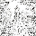
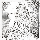
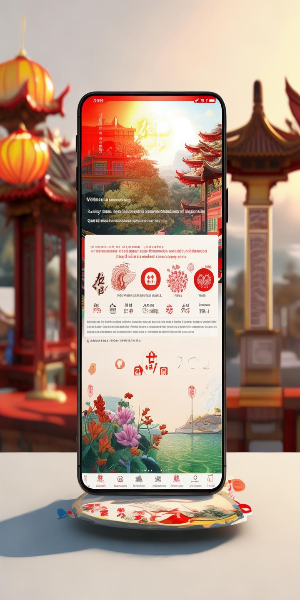

传承非遗文化
弘扬中华传统
通过系统化学习非遗技艺，感受传统文化魅力，成为非遗文化的传承者与传播者。


10,000+ 学员已加入
继续学习
上次学到：中国传统剪纸技艺 - 第3课
非遗课程分类
探索丰富多样的非遗课程，跟随传承人学习传统技艺，感受中华文化的博大精深。
中国传统剪纸技艺
学习剪纸的基本技巧和创作方法，掌握这项流传千年的民间艺术。
毛笔书法基础
从握笔姿势到基本笔画，系统学习中国书法的入门知识和技巧。
古筝演奏入门
了解古筝的历史文化，掌握基本演奏技巧和简单乐曲的弹奏方法。
水墨画基础技法
学习水墨画的用笔、用墨技巧，掌握山水、花鸟等题材的基本画法。
非遗传承人
认识我们平台的非遗传承人，他们是传统文化的守护者和传播者，将带领您领略非遗的魅力。
王大师
剪纸技艺传承人
从事剪纸艺术40余年，作品曾多次在国内外展览中获奖，致力于剪纸技艺的传承与创新。
李老师
书法艺术传承人
中国书法家协会会员，书法作品被多家博物馆收藏，拥有20年书法教学经验。
张老师
古筝演奏传承人
青年古筝演奏家，毕业于中央音乐学院，曾获多项国家级音乐奖项，教学经验丰富。
您的学习数据
跟踪您的学习进度和成就，见证您在非遗文化学习之旅中的成长。
12
已学课程
8.5
学习时长(小时)
5
获得证书
1,280
文化币
学习趋势
文化币与积分兑换
通过学习和答题获得文化币，兑换精美文创产品或现金奖励，让您的学习之旅更有收获。
10元现金
需要 1000 文化币
50元现金
需要 5000 文化币
100元现金
需要 10000 文化币
100文化币 = 1元人民币
查看完整《积分获取规则》用户评价
听听其他学员怎么说，他们的学习体验和收获。
陈同学
"通过这个平台学习剪纸技艺，让我重新认识了中国传统文化的魅力。王大师的讲解非常细致，课程内容丰富，很容易上手。现在我已经能剪出简单的窗花了，非常有成就感！"
林先生
"作为一名书法爱好者，这个平台的书法课程让我受益匪浅。李老师的教学方法非常系统，从基本笔画到结构布局，讲解清晰易懂。通过两个月的学习，我的书法水平有了明显提高，还获得了证书，非常满意！"
张同学
"一直对古筝很感兴趣，但没有机会学习。这个平台的古筝课程非常适合初学者，张老师的讲解耐心细致，课程进度安排合理。我已经学完了入门课程，现在能弹奏几首简单的曲子了。平台的文化币兑换功能也很实用，学习还能赚钱，一举两得！"
随时随地学习非遗文化
下载我们的移动应用，随时随地学习非遗课程，参与答题挑战，获取文化币，兑换精美文创产品。
